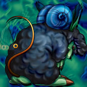

Mystical Sheep #2

Description: "When this card is flipped face-up in battle, the opposing monster is spellbound for 1 turn."
STATS
ATK: 800
DEF: 1000DECK COST
Deck Cost per Card: 23EFFECT NOT IMPLEMENTED
Fusion List (24 Possible Fusions)
- Mystical Sheep #2 + Bat = Giga-tech Wolf
- Mystical Sheep #2 + Cyber-Stein = Giga-tech Wolf
- Mystical Sheep #2 + Cyber Commander = Giga-tech Wolf
- Mystical Sheep #2 + Cyber Soldier = Dice Armadillo
- Mystical Sheep #2 + Dancing Elf = Nekogal #2
- Mystical Sheep #2 + Dark Shade = Mystical Sheep #1
- Mystical Sheep #2 + Enchanting Mermaid = Nekogal #2
- Mystical Sheep #2 + Fire Reaper = Flame Cerebrus
- Mystical Sheep #2 + Fungi of the Musk = Mystical Sheep #1
- Mystical Sheep #2 + Giga-tech Wolf = Dice Armadillo
- Mystical Sheep #2 + Jinzo #7 = Giga-tech Wolf
- Mystical Sheep #2 + Kaminarikozou = Tripwire Beast
- Mystical Sheep #2 + Larvas = Mon Larvas
- Mystical Sheep #2 + Mech Mole Zombie = Mystical Sheep #1
- Mystical Sheep #2 + Mechanical Snail = Giga-tech Wolf
- Mystical Sheep #2 + Petit Angel = Garvas
- Mystical Sheep #2 + Queen's Double = Nekogal #2
- Mystical Sheep #2 + Solitude = Mystical Sheep #1
- Mystical Sheep #2 + Swordsman from a Foreign Land = Tiger Axe
- Mystical Sheep #2 + Tentacle Plant = Flower Wolf
- Mystical Sheep #2 + The Shadow Who Controls the Dark = Mystical Sheep #1
- Mystical Sheep #2 + Waterdragon Fairy = Nekogal #2
- Mystical Sheep #2 + White Dolphin = Tatsunootoshigo
- Mystical Sheep #2 + Wicked Dragon with the Ersatz Head = Mystical Sheep #1